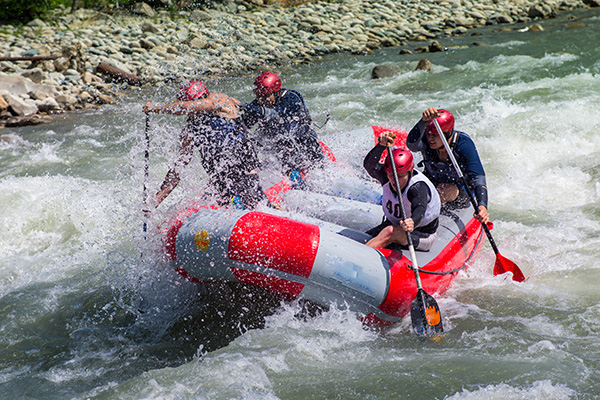

Top Three Favorite Trips

The Potomac Kayak River Float is a fun and relaxing cruise down the Occoquan endind in the Belmont Bay. This smaller river takes you through some of the nicest wooded area in Northern Virgina. Combinied with the temperate climate an easy waters you are able to move at you own pace, sutible for all level of skill.
The Wet 'N Wild Float is a fan favorite, navigate some of the largest rapids in the Potomac river with our highly skilled guides. Expect to get drenched while having a thrilling rafting ride. This adventure is fast paced from start to end and great for those seeking a unique and challenging experience.

Our Family Float is a great experience for all ages. Follow our guide as you float the Potomac, enjoying all the scenery and experiencing mild rapids that allow for some laughs and splashing safe for all ages. End the trip in the Belmont bay which is great for swimming and family play on the nearby beach.
| Trip Name | Age Groups | Recommened Experience | Trip Type | Group Size | Price |
|---|---|---|---|---|---|
| Wet 'N Wild (With Guide) | 12 and up | Beginner to Expert | Rapids Class 4 - Raft | 12 People - 6 Per Raft | $100 per person - $1000 for total group reservation |
| Wet 'N Wild (With Guide) | 16 and up | Intermediate to Expert | Rapids Class 4 - Kayak | 8 People | $80 per person - $700 for total group reservation |
| Wet 'N Wild (Without Guide) | 18 and up | Expert | Rapids Class 4 - Raft | Min 4 - Max 18 | $540 per raft |
| Wet 'N Wild (Without Guide) | 18 and up | Expert | Rapids Class 4 - Kayak | N/A | $75 per person |
| River Float (With Guide) | 16 and up | Beginner to Expert | Rapids Class 2 - Kayak | 8 People | $80 per person - $700 for total group reservation |
| River Float (With Guide) | 12 and up | Beginner to Expert | Rapids Class 2 - Raft | 12 People - 6 Per Raft | $100 per person - $1000 for total group reservation |
| River Float (Without Guide) | 16 and up | Beginner to Expert | Rapids Class 2 - Kayak | N/A | $75 per person |
| River Float (Without Guide) | 12 and up | Beginner to Expert | Rapids Class 2 - Raft | Min 4 - Max 18 | $540 per raft | Family Float (With Guide) | All Ages | Beginner to Expert | Rapids Class 1 - Raft | 8 people | Contact for Pricing |